Donde la creatividad encuentra el escenario y la música no conoce límites.
Clases virtuales, presenciales y a domicilio de guitarra, piano, canto, batería, bajo, violín, saxofón, ukelele y mucho más. Cursos enfocados en los gustos y necesidades de cada estudiante desde 2021.
Somos una plataforma que le da vida a los sueños musicales de cada estudiante. Desde 2021 impartimos clases en Bogotá de manera virtual, presencial y a domicilio, con un portafolio de cursos libres en guitarra acústica, guitarra eléctrica, técnica vocal, piano, batería, bajo eléctrico, ukelele, violín, saxofón, iniciación musical y teoría musical.
También ofrecemos cursos extracurriculares para instituciones y empresas interesadas en desarrollar su componente artístico. Todos nuestros cursos están enfocados en los gustos y necesidades de cada uno de nuestros estudiantes.
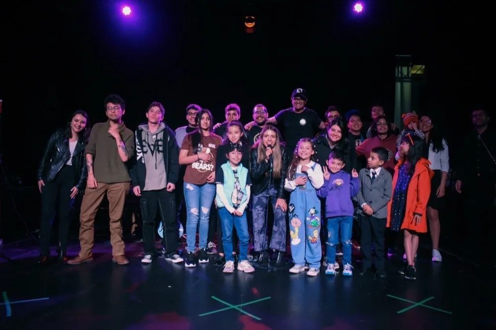
Ofrecer una educación de alta calidad, adaptada a los gustos y necesidades de nuestros estudiantes. Nos dedicamos a fomentar su crecimiento artístico, brindándoles la oportunidad de vivir experiencias escénicas a través de nuestros conciertos.
Convertirnos en la academia de música más influyente. Aspiramos a expandir nuestra presencia y colaboración con instituciones y empresas, creando un entorno donde el desarrollo artístico de nuestros estudiantes florezca y enriquezca nuestra comunidad.
Cuatro espacios formativos pensados para cada etapa del proceso musical, desde la primera infancia hasta la preparación universitaria.
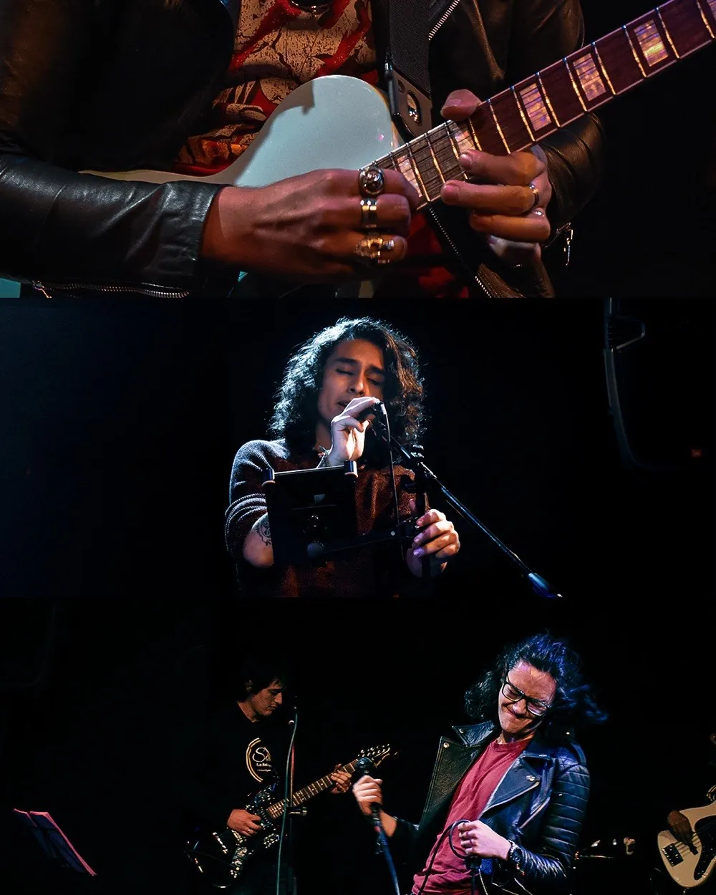
Estudia tu instrumento favorito e interpreta las canciones que más te gustan. Clases de 4 u 8 sesiones al mes (60 min), con nivel de partida individual definido mediante prueba diagnóstica.
Trabajamos: técnica, lectura, estilos, repertorio e improvisación.
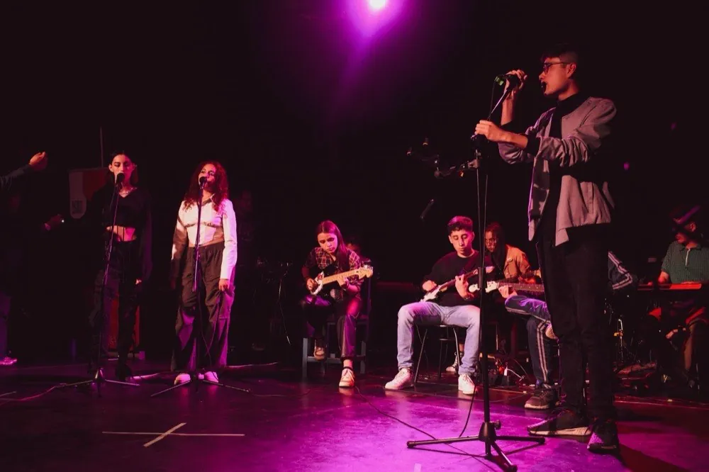
Si ya estás aprendiendo un instrumento, es hora de tocar con tus compañeros. Una sesión semanal de 2 horas para vivir la experiencia real de tocar en agrupación, con estilos según los gustos del grupo.
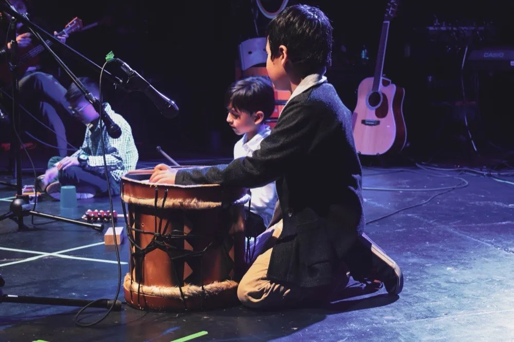
Desarrolla habilidades motoras y cognitivas a través de la música y el juego. Dirigido a niños y niñas de 3 a 6 años, en sesiones de 2 horas por grupos de edad (3-4 y 5-6 años).
Se trabaja ritmo, coordinación, motricidad y estimulación auditiva.
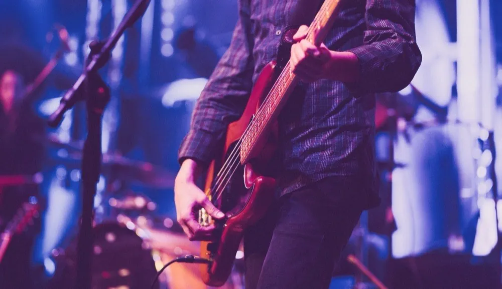
¿Quieres estudiar música en la universidad? Programa de 4 meses con formación teórica-auditiva grupal (4h/semana) e instrumento principal individual (1h/semana) para preparar tus pruebas de admisión.
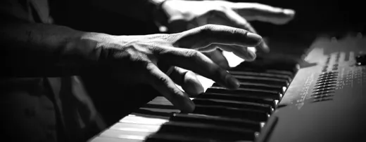
Piano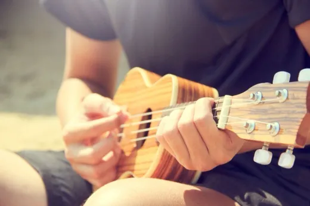
Ukelele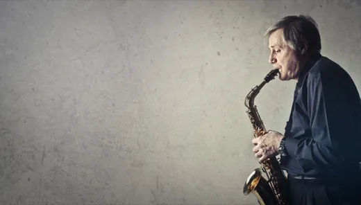
Saxofón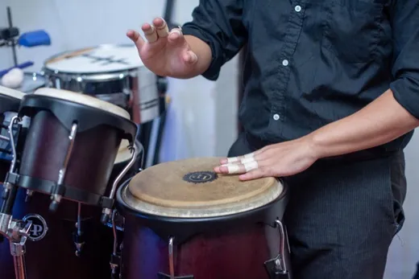
Percusión latina y colombiana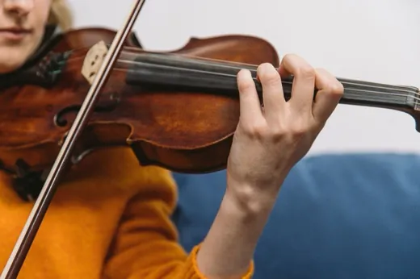
Violín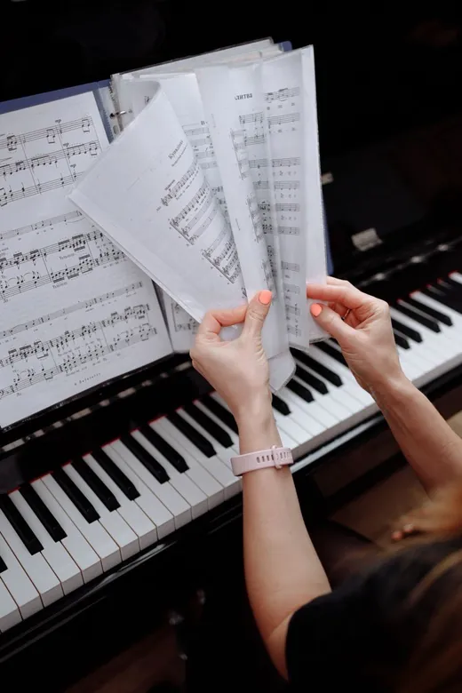
Teoría musicalProfesionales activos en la escena musical de Bogotá, con formación universitaria y trayectoria como intérpretes, productores y pedagogos.
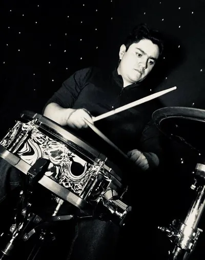
Baterista formado en la Fundación Gentil Montaña, con años de trayectoria en eventos en vivo.
Ver másCofundadora de Soul La Academia y cantante con ocho años de trayectoria en escenarios de Bogotá.
Ver más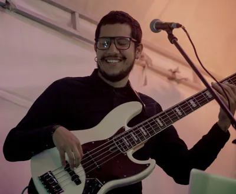
Bajista y productor con estudios de música afrocubana en La Habana y créditos en varios discos nacionales.
Ver másPianista formado en la Universidad Nacional; cree en la música como herramienta de transformación social.
Ver más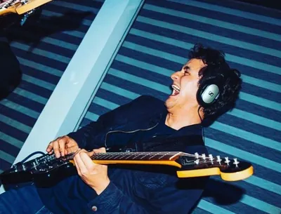
Más de 12 años enseñando guitarra y 15 años de trayectoria en bandas de rock, pop y jazz.
Ver másRealizamos un concierto semestral en el que nuestros estudiantes visibilizan su proceso en cada programa, viviendo una experiencia musical real sobre el escenario, para disfrute de familiares y amigos.
Comunícate con nosotros y empieza ya tu proceso musical.